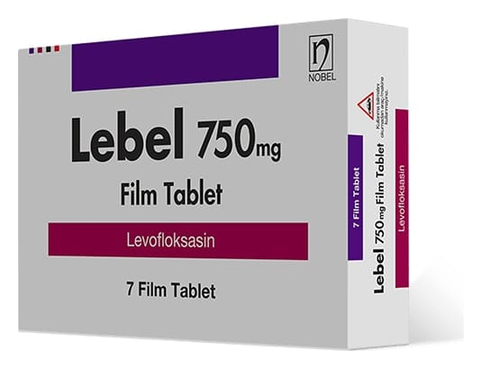

Lebel 750 mg Film Tablet, 7 Adet

Ne için kullanılır
KT · Bölüm 1LEBEL etkin madde olarak sentetik, florokinolon türevi geniş spektrumlu bir antibakteriyel olan levofloksasin içeren, beyaz renkli, oblong, film kaplı tabletlerdir.
LEBEL, her bir tablette 750 mg levofloksasin'e eşdeğer levofloksasin hemihidrat içeren, 7 ve 14 film kaplı tabletlik PVC/PE/PVDC-Al folyo blister ambalajda satışa sunulmuştur. LEBEL, akciğer, sinüs, idrar yolu, deri ve yumuşak doku enfeksiyonlarının tedavisinde kullanılmaktadır. LEBEL, aşağıda belirtilen enfeksiyonların tedavisinde kullanılır: • Toplum kökenli pnömoni (Zatürre) • Hastane kaynaklı (nozokomiyal) pnömoni • Kronik bronşitin akut alevlenmesi (Uzun süredir devam eden nefes alma zorluğu oluşturan solunum yolu enfeksiyonları) • Akut bakteriyel sinüzit (Sinüs iltihabı) • Komplikasyon yapmamış ve komplikasyon yapmış (şiddetli) üriner sistem enfeksiyonları (İdrar yolu enfeksiyonları) • Akut piyelonefrit (Böbrek enfeksiyonu) • Komplikasyon yapmamış ve komplikasyon yapmış (şiddetli) deri ve yumuşak doku enfeksiyonları (Cilt ya da cilt altı enfeksiyonları)